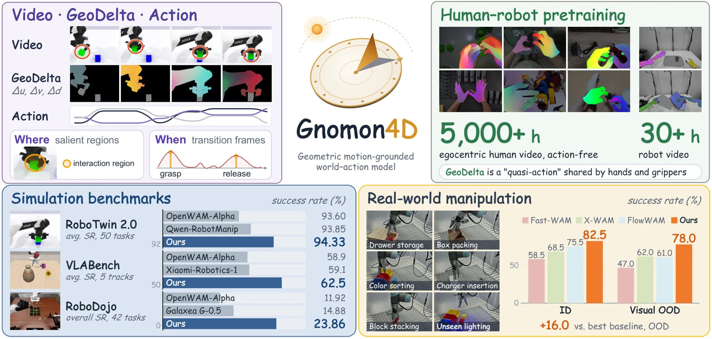
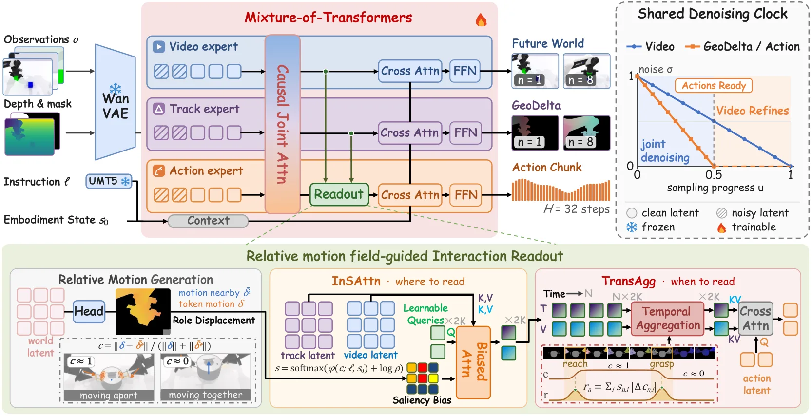
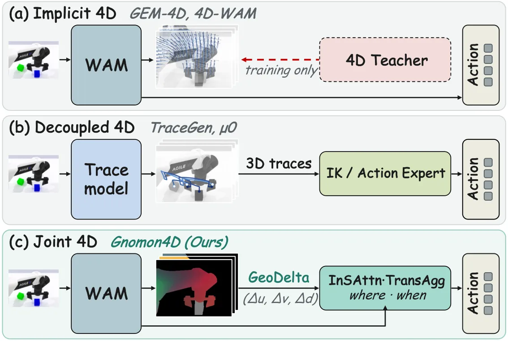
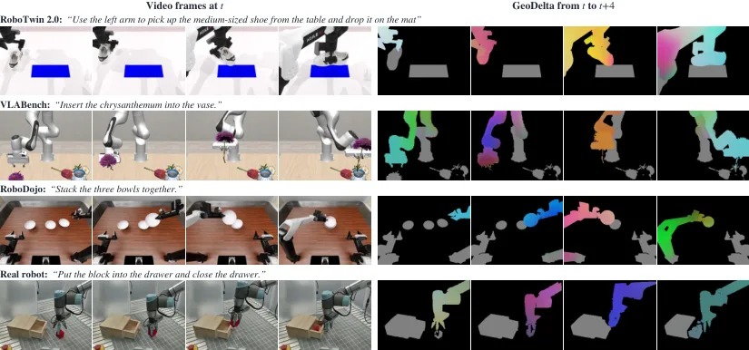

Gnomon4D：把 4D 几何运动作为世界-动作模型的在线接口
Gnomon4D: Learning Where and When to Focus for Geometric Motion-Grounded World-Action Modeling
在 Mixture-of-Transformers 里增加一个 GeoDelta 专家，与视频、动作专家联合去噪，预测每个前景像素的 (Δu,Δv,Δd)；再用 embodiment-object 相对运动算出空间显著性（InSAttn）与时间转折分数（TransAgg），把交互 token 残差注入动作专家。RoboTwin 2.0 平均 94.33%，真机 ID 82.5%、OOD 78.0%（156/200）。
RoboTwin 2.0 average SR
real-robot OOD SR
object-motion ablation gain
parameters
作者、单位与技术谱系 · Research context
作者与单位
研究脉络
- Wan2.2-TI2V-5B（Wan et al., 2025）方法基座关系：Video 专家直接由该视频生成模型初始化，GeoDelta 与 Action 专家再由其宽度插值派生，三专家共享同一注意力空间。[论文 §4.1]
- Mixture-of-Transformers（Liang et al., 2025, TMLR）架构基座关系：三专家独立权重、逐层 joint attention 的 MoT 结构直接沿用，本文只是在其上增加 GeoDelta 专家与交互读出。[论文 §3.1 与 §3.4]
- X-WAM（Guo et al., 2026, arXiv:2604.26694）上游同类方法关系：代表“逐帧深度”路线：预测 RGB-D 未来，但深度没有跨帧对应；本文把它作为 3D 几何类基线并指出其 OOD 退化 6.5 点。[论文 §1、Table 1 与 Table 10]
- 4D-WAM（Yang et al., 2026, arXiv:2608.08023）与 GEM-4D（Zhou et al., ECCV 2026）上游同类方法关系：两者都在训练时用稠密轨迹场或 4D 先验正则化 WAM 特征，但推理时丢弃 4D 分支；本文的差异是让 4D 运动在线生成并持续可读。[论文 §1 与 Figure 2]
- Gnomon4D（本篇推进）本篇推进关系：把 GeoDelta 作为第三模态与视频、动作联合生成，并用 InSAttn/TransAgg 从相对运动中选区域与时刻。[论文 §1 贡献与 Table 4]
合作网络
- KlingAI Research ↔ 华南理工大学Yan Zhou / Guoxin Zhang / Pengfei Wan (KlingAI Research) → Qingyao Wu (华南理工大学，通讯作者)关系：共同署名（通讯作者跨机构）[论文首页署名]
- KlingAI Research ↔ 清华大学KlingAI Research（Guoxin Zhang、Pengfei Wan） → Yebin Liu（清华大学）关系：共同署名[论文首页署名]
- KlingAI Research ↔ 南京大学 / 北京师范大学 / Shadow AIKlingAI Research → 南京大学、北京师范大学、Shadow AI关系：共同署名（多单位合作）[论文首页署名]
- Gnomon4D → Wan2.2-TI2V-5BGnomon4D → Wan2.2-TI2V-5B关系：明确技术依赖（初始化与专家派生）[论文 §4.1 与 Table 5]
作者单位与角色来自论文首页标注；网络只记录共同署名与明确的技术依赖，不推断导师、师生或实验室隶属关系。
方法本质拆解 · What actually changed
是不是微调？
不是简单微调，而是三阶段训练：Video 与 GeoDelta 专家先在 EgoManip-5000H（5,000+ 小时无动作第一视角视频）上预训练，再加入 Action 专家在 Robot-30H（34.1 小时、10,500 episode）中训，最后在目标任务后训练（仿真 20k 步、真机 5k 步）。Video 专家从 Wan2.2-TI2V-5B 初始化（30 层、宽 3072），GeoDelta 与 Action 专家由宽度插值得到（宽 1024），三者也共享同一注意力空间。
有没有额外约束？
有几层显式约束。GeoDelta 必须定义在预测视频的像素栅格上并复用冻结 VAE，这把它与视觉未来强对齐；去噪时钟把 σ_G=σ_A 绑到 max(1−2u,0)，限制了三模态可出现的噪声组合；因果注意力 mask 规定未来视频/GeoDelta 只能看自己时间步之前的动作、干净 token 不看噪声 token；训练还有本体/物体角色头的监督与 μ-law 编码的尺度约束（ω_u=ω_v=W/6，真机 ω_d=0.10 m）。
推理/后端到底做了什么？
推理是 20 步联合去噪：前 10 步三模态一起降噪，第 10 步后 GeoDelta 与动作已干净，剩余步数只精化视频。控制器执行 32 个预测动作中的前 16 个，然后取新观测重规划；动作是关节增量加夹爪开合，按训练集统计反归一化后插值执行。没有额外的轨迹优化、MPC 或 PnP 后端，GeoDelta 只在网络内部作为条件与读出依据。
方法本质是什么？
本质是把“未来”从外观视频改成视频对齐的稠密 4D 运动场，让动作专家在去噪过程中直接查询本体与物体的相对运动，并用该相对运动的显著性与时间变化决定读哪里、读哪帧。它改变的是动作专家可用的条件信息与注意力分配，而不是动作解码器本身；没有做的是显式物理约束、接触力建模与测试时优化。
输入（多视图 RGB + 当前深度/前景掩码 + 本体状态 + 语言）→ 三专家联合去噪生成视频、GeoDelta 与动作 → 用本体-物体相对运动做空间/时间加权读出 → 动作先于视频成熟并直接执行。

结论与问题Conclusion & Motivation
核心结论
Gnomon4D 的主张是：世界-动作模型缺的不是“更真实的未来视频”，而是一个动作专家能直接读的、显式的运动接口。它把未来表示改成 GeoDelta——在预测视频的像素栅格上记录每个前景点相对下一采样帧的 (Δu,Δv,Δd)，与视频、动作三路联合去噪；再用本体-物体相对运动决定动作专家“看哪里”（InSAttn）和“何时看”（TransAgg）。结果在三个仿真基准领先：RoboTwin 2.0 平均 94.33%（最强结构化读出基线 STARRY 93.56），VLABench 平均 62.5（OpenWAM-Alpha 58.9），RoboDojo SR 23.86%（OpenWAM-Alpha 11.92）；真机 82.5% ID / 78.0% OOD，基线在 OOD 最多 62.5%。最有信息量的不是均值，而是退化幅度：Gnomon4D 从 ID 到 OOD 只掉 4.5 点，FlowWAM 掉 14.5 点，说明运动表征确实比外观表征更抗纹理与光照变化。
动机与问题
现有 WAM 大多把未来表示成 RGB 视频，继承了视频基础模型的视觉先验，但也把任务相关的状态变化（物体被抓起、插入）与纹理、光照、背景纠缠在一起，策略容易过拟合外观；RGB 作为 2D 投影又缺少插入、堆叠所需的深度信息。补深度的做法（RGB-D、逐帧点图）只定位表面，没有跨帧对应，无法表达“接近—操作—释放”的本体-物体运动关系。已有的 4D 方案分两类：4D-WAM、GEM-4D 在训练时用轨迹场正则化，推理时丢掉 4D 分支；TraceGen、μ0 预测稀疏 3D 轨迹，但要用单独的 trace-to-action 接口翻译成控制。作者要的是第三种：4D 运动与动作一起在线生成，并且直接参与动作读出的组织。
方法Method
方法总览
架构是 Video、GeoDelta、Action 三个专家的 Mixture-of-Transformers，每个专家独立权重、每层通过 joint attention 交换信息。GeoDelta 定义为 g_{n+1}(u_n,v_n)=Π_n(X_{n+1})−Π_n(X_n)=(Δu,Δv,Δd)，两帧位置都在同一相机下度量，因此对相机运动不变；前景由本体与被操作物体组成，二者共享像素栅格与时间轴。为了让冻结的视频 VAE 直接复用，三个分量先软阈值、按固定尺度归一化，再用 μ=31 的 signed μ-law 压扩映射到 RGB 三通道。训练时 Video 专家以当前多视图帧为干净条件，GeoDelta 专家以当前头相机深度与前景掩码为条件，Action 专家没有自己的条件 token，只通过注意力读前两者。读出阶段用 K=32 个可学习 query，先逐帧做 InSAttn 空间加权，再跨帧做 TransAgg 时间加权，得到 2K 个交互 token 残差注入动作层。
关键技术细节
两个设计决定方法能否成立。第一是去噪时钟：三个专家若各自独立采样噪声等级，训练会覆盖大量推理永远遇不到的组合，因此作者把噪声等级绑到同一进度 u，令 σ_V=1−u、σ_G=σ_A=max(1−2u,0)；前一半三模态联合去噪，后一半 GeoDelta 与动作已干净、只精化视频。训练分布也据此安排：40% 按该时钟采样，40% 采 σ_G=σ_A≤σ_V，20% 让 GeoDelta/动作保持干净只加噪视频。第二是相对运动场：轻量头从 GeoDelta 特征预测每 token 的运动 δ 与本体/物体角色概率，局部本体运动 δ̄^e 取周围臂与夹爪的平均，相对运动 c=‖δ−δ̄^e‖/(‖δ‖+‖δ̄^e‖+ε)；抓取让 c 从高变低、释放让它回升，所以 |Δc| 天然在接触事件处出现峰值。InSAttn 用 φ(c,ℓ,s₀)+log(ρ^e+ρ^o) 做 softmax 得到显著图，TransAgg 用 r_n=Σ s|Δc| 给帧打分；两者都只是把 log 权重加进注意力的 logits，没有额外网络分支。

实验Experiments
实验设置
仿真覆盖三个基准：RoboTwin 2.0 的 50 个双臂任务（clean 与 domain-randomized 两种设置，每任务 100 episode）、VLABench 的 10 个任务族五条 track（ID、未见类别、常识变化、语义指令、未见纹理，每任务每 track 50 episode，Insert Flower 未见类别为 10）、RoboDojo 的 42 个双臂任务五个维度（泛化、精度、长程、记忆、开放指令），指标为成功率与部分得分。真机是 UR5e 加 1-DoF 平行夹爪、固定 RealSense D435i 头视图与腕部相机，5 个任务（抽屉收纳、装箱、积木堆叠、颜色分拣、充电器插入），每任务 50 条示范共 250 条，评测每方法每任务 40 ID + 40 OOD（共 400 次），OOD 四种视觉偏移各 10 次/任务。对照包括 π0.5、Galaxea G-0.5、Qwen-RobotManip、Motus、Fast-WAM、LingBot-VA 2.0、OpenWAM-Alpha、X-WAM、WAM4D、FlowWAM、MECo-WAM、ARPS、STARRY；真机对照 Fast-WAM、X-WAM、FlowWAM。
实验数字与比较
Table 1（RoboTwin 2.0-Full）：Clean 94.56 / Rand. 94.10 / 平均 94.33，Qwen-RobotManip 93.85、LingBot-VA 2.0 93.60、OpenWAM-Alpha 93.60、STARRY 93.56；相对最强几何/光流类 WAM（MECo-WAM 92.62）高 1.71 点。Table 2（VLABench）：ID 84.0、Cat 39.1、CS 61.7、Ins 59.1、Tex 68.8，平均 62.5 对 OpenWAM-Alpha 58.9；对 OpenWAM 的领先从 ID 的 0.6 点扩大到未见纹理的 7.4 点。Table 3（RoboDojo）：SR 23.86% 对 OpenWAM-Alpha 11.92%，Score 30.96 对 20.23（Galaxea G-0.5）；Precision 维度 28.24% 对最高 20.42%。真机（Table 10/11）：ID 165/200（82.5%）、OOD 156/200（78.0%），FlowWAM 151/122、X-WAM 137/124、Fast-WAM 117/94；OOD 分项 39/50 光照、41/50 桌布、36/50 外观、40/50 干扰物。插入任务 29/40 ID 与 29/40 OOD，是相对基线提升最大的精度场景。
消融/失败边界
Table 4 三组消融都在 10 个交互密集的 RoboTwin 任务上、每个变体后训练 20k 步。未来表示（稠密读出）：RGB 80.0、RGB+Depth 80.9、RGB+2D Flow 82.5、RGB+GeoDelta（仅本体）80.7、RGB+GeoDelta（完整）83.4——本体运动只值 0.7 点，物体运动再加 2.7 点，说明增益来自“物体如何响应本体”，而不是把动作重新编码一遍。读出结构：通用 query 83.6（与稠密读出 83.4 基本持平）、仅 InSAttn 85.3、InSAttn+TransAgg 86.2，即“怎么选”比“query 容量”更重要。预训练课程：Wan2.2-5B 初始化不预训练 86.2、加 EgoManip-5000H 88.3、再加 Robot-30H 91.0。失败边界主要在标签与材质：真机 GeoDelta 用实测深度，人类视频用单目深度估计；作者明确说薄、反光、透明表面的误差主要扰动 Δd。RoboDojo 的物体 GeoDelta 由 DA3 深度、SAM 3.1 掩码与 RAFT 光流估计，并非精确值；此外论文没有给出推理延迟、显存与失败回合分类，5 个真机任务均为单臂。
局限与迁移Limitations & Transfer
局限与待核验
作者明确承认的局限集中在监督质量：GeoDelta 依赖逐像素深度、本体/物体掩码与跨帧对应，真机用实测 RGB-D，人类视频只能用单目深度；薄、反光、透明表面会让 Δd 失真，作者把更干净的标签寄望于把真实场景重建为可仿真世界或用品身反馈迭代精化。我们待核验的是：论文没有报告推理步数与控制频率的实测关系（20 步去噪、动作在第 10 步干净，但未给端到端 Hz 与 GPU 型号）；没有报告 6.76B 参数下的训练算力与数据配比敏感性；没有给出失败类型统计；RoboDojo 上物体运动标签是估计值，其精度对结论的影响未做消融；代码与权重状态在论文中未说明，项目页是唯一入口。
与你研究路线的关系
这篇对我们最有价值的不是 WAM 架构，而是“把稠密运动场当作跨模块接口”的做法：GeoDelta 只描述表面运动，不依赖具体本体，因而人类视频与机器人数据可以共享同一监督空间——这和我们在多传感器融合里用场景流/运动一致性做动态点剔除、外参在线校核是同一类中间量。可迁移模块有三个：像素级 (Δu,Δv,Δd) 场作为动态/静态分离的依据；用相对运动 c 与其时间变化 |Δc| 检测接触事件（可对应抓取/放置的状态切换）；以及“动作先干净、视频后精化”的非同步去噪时钟，可用于任何多模态联合推理的算力分配。下一步实验可以先把现成光流加深度拼出 GeoDelta，在我们的动态场景数据上验证它能否替代语义掩码做动态点剔除，并量化薄结构/反光表面的 Δd 噪声；若有效，再考虑把 GeoDelta 残差作为因子图中的运动先验或异常观测权重。



